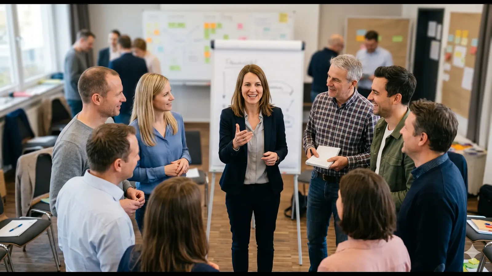

Gute Entwicklung endet nicht mit dem Workshop. Die MLG Learning Platform ist der digitale Begleiter unserer Leadership-Programme: Sie bereitet Teilnehmende vor jedem Modul vor, vertieft die Arbeit zwischen den Sessions und hält jede Erkenntnis, jedes Tool und alle Materialien griffbereit, lange über das Programmende hinaus.
Ein Begleiter für jedes unserer Trainings
Jedes MLG-Programm kann sein eigenes digitales Zuhause bekommen. Teilnehmende folgen einer klar strukturierten Journey: Module, Deep Dives, Pre-Work und Übungen, die das Live-Erlebnis spiegeln und erweitern. Inhalte werden automatisch freigeschaltet, während das Programm voranschreitet, sodass das richtige Material immer im richtigen Moment bereitsteht.
Vollständig maßgeschneidert
Wie jedes MLG-Programm ist auch die Plattform auf Sie zugeschnitten: Ihr Branding, Ihre Struktur, Ihre Inhalte, Ihre Benennungen. Nichts von der Stange.
Alle Materialien an einem Ort
Foliensätze, Workbooks, Dokumente, Videos und kuratierte Links, jederzeit und auf jedem Gerät zugänglich.
Strukturierte Journeys
Programme, organisiert in Module und Deep Dives, veröffentlicht nach Ihrem Zeitplan.
Fortschritt auf einen Blick
Teilnehmende sehen, wo sie stehen, und nichts geht zwischen den Sessions verloren.

Alles rund ums Training, geregelt
Die Plattform trägt nicht nur Inhalte: Sie trägt das ganze Programm.
Logistik
Veranstaltungsorte, Termine, Anfahrtsbeschreibungen und Reiseunterlagen zum Download für jedes Präsenzmodul.
Facilitator-Profile
Teilnehmende wissen immer, mit wem sie arbeiten und wie sie ihre Facilitatoren erreichen.
1:1-Coaching
Teilnehmende können sich direkt mit ihren Facilitatoren zu individuellen Sparring-Sessions verabreden.
Persönliche Notizen
Ein privater Raum, um Reflexionen zu jeder Lektion festzuhalten.
Gebaut für alle, die Programme steuern
Hinter den Kulissen macht die Plattform das Programm-Management einfach: für uns und für unsere Kunden.
Kunden & Kohorten
Jeder Kunde erhält einen eigenen gebrandeten Bereich, und Teilnehmende werden in Kohorten organisiert, mit Zugriff auf genau die richtigen Programme.
Rollen, die zur Realität passen
Administratoren, HR-Admins auf Kundenseite, Facilitatoren und Teilnehmende sehen jeweils genau das, was sie brauchen, nicht mehr.
Müheloses Onboarding
Teilnehmende einzeln einladen oder ganze Kohorten auf einmal importieren, die Einschreibung geschieht automatisch.
Smarte Kommunikation
Automatisierte, personalisierte E-Mails informieren Teilnehmende über neue Inhalte und anstehende Sessions, mit Ein-Klick-Abmeldung in jeder Nachricht.
Messen, was zählt
Anonyme Evaluationen sind eingebaut. Umfragen gehen automatisch zu den Zeitpunkten raus, die Sie definieren, Ergebnisse erscheinen in klaren Ampel-Dashboards, und Kohorten lassen sich nebeneinander vergleichen: So sehen Sie nicht nur, dass Entwicklung stattgefunden hat, sondern wo.
Sicher gehostet in Deutschland
Ihre Daten bleiben, wo sie hingehören. Die Plattform wird ausschließlich in Deutschland gehostet, vollständig DSGVO-konform, mit Sicherheit von Grund auf: von verschlüsseltem Zugriff bis zu strikten rollenbasierten Berechtigungen. Keine Drittlandtransfers, keine Kompromisse.
Eine Plattform. Ihr ganzes Programm.
Sprechen Sie mit uns darüber, die MLG Learning Platform mit Ihrer nächsten Leadership-Journey zu verbinden.
Kontaktieren Sie uns